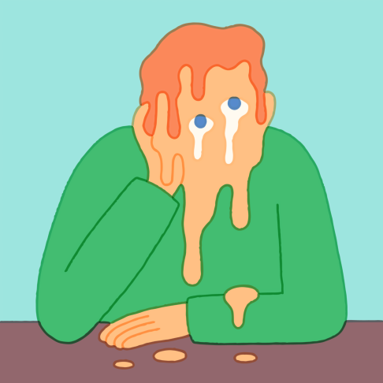

|
San Francisco-based artist Tim Lahan's naughty, witty artwork is the product of his ability to digest and illustrate clever glitches, concepts and interesting visual cues from the world around him.
|  |
"I generally aim to make things as simple as possible," says Tim. "Sometimes they come out funny."
Generally commissioned to bring a touch of joy to magazines, brand campaigns and music collateral, the ADC Young Gun award winner's instantly recognisable style is enviably simple and genuinely funny: something very few illustrators can boast.
|